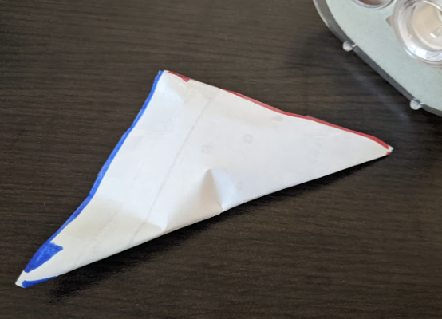

Now, a diagram showing how to tape a rectangle into a sphere. I rotated the
rectangle. The top is like the north pole and the bottom is like the south
pole.

I tried taping a rectangle into a sphere in real life. It ended up more like a
puffy triangle / dumpling than a round sphere 😕.
It's okay! When we are talking about topology, as long as it wraps around like
a sphere, its a sphere.
Colour Picker
Here is a colour picker. It is made out of two circles with connected
boundaries.
Try dragging the input circle
across a boundary.
These two circles together wrap around like a sphere. The left circle is like
the front of the sphere, and the right circle is like the back.
If you remember Twisted Taping, you may
have noticed that the circular Real Projective Plane input wraps around in a
similar way to these two circles. If so, you are on to an interesting
relationship called a double covering, but I will have to talk about that in
another article.
But what does "wraps around like" mean?
We just took a look at two inputs: the rectangle that wraps around like a
sphere, and the color picker that wraps around like a sphere.
The input circle
is synchronized across both of these inputs: if you drag the input circle
in one input, it also moves in the other input. The synchronization respects
how each input wraps around, and the point never jumps or teleports.
In Topology, this kind of synchronization relationship is called a
homeomorphism. If you can synchronize two input spaces with a
homeomorphism, then they are called homeomorphic, and they're topologically
the same space.
Any space that wraps around like (is homeomorphic
to) a sphere, is a sphere!